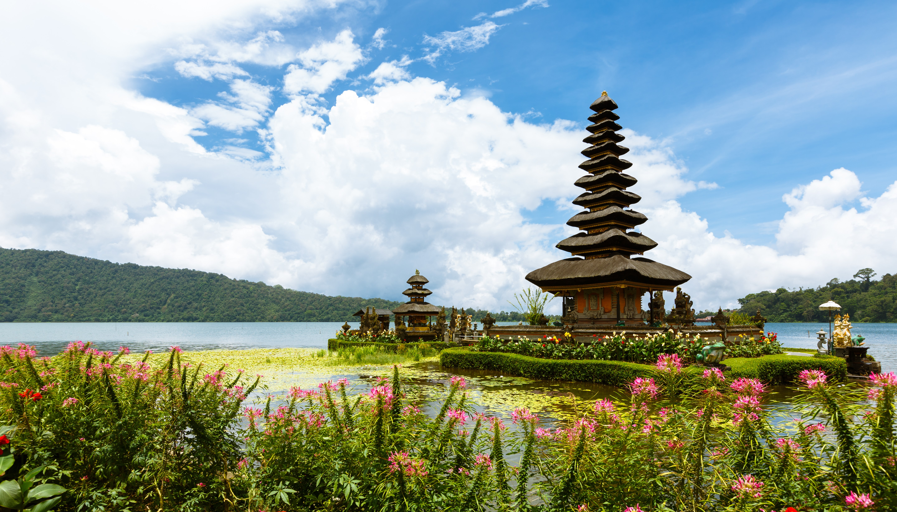
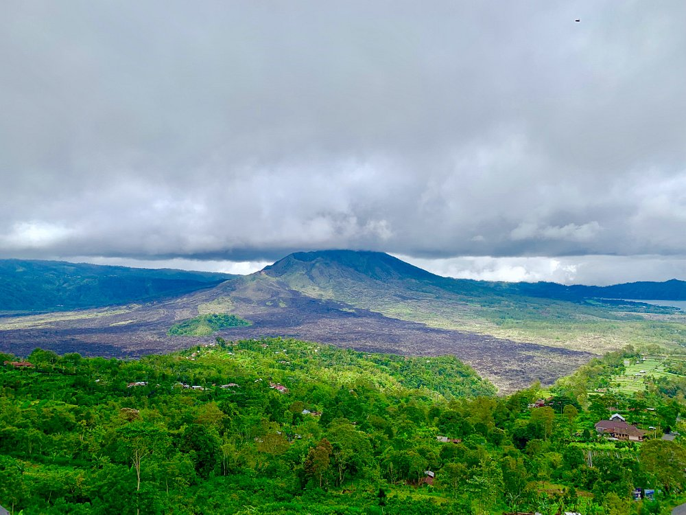
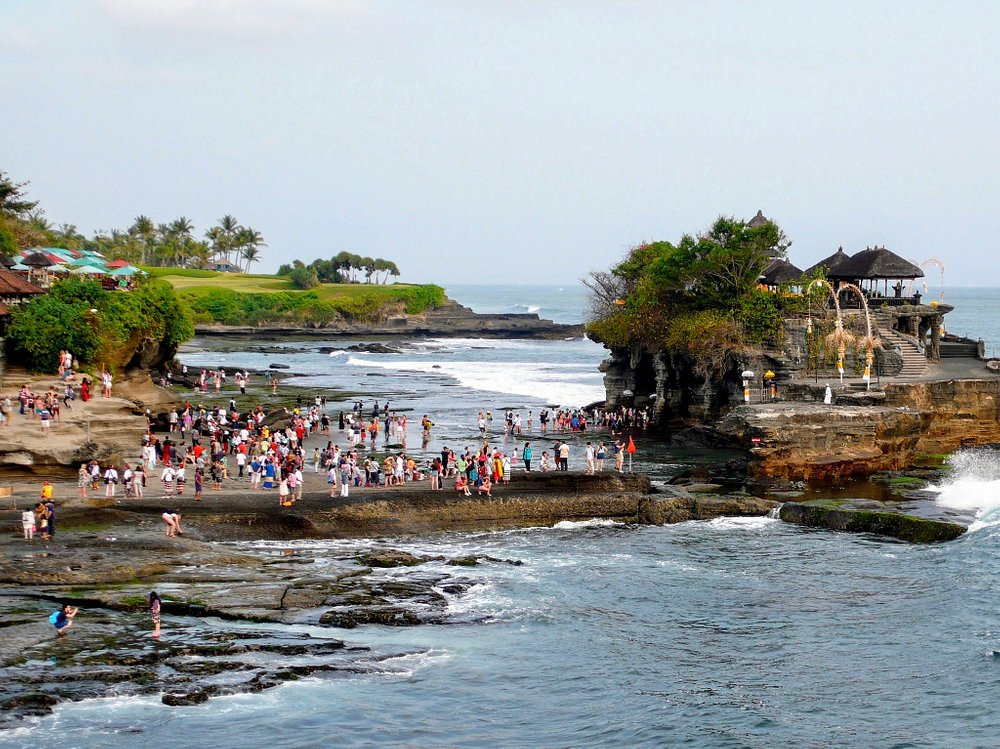
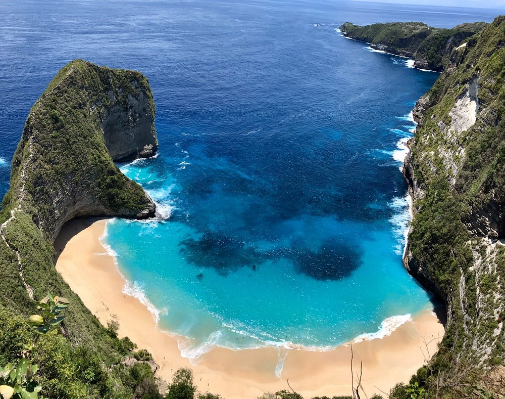

Air Terjun Sekumpul sering dijuluki air terjun paling indah di Bali, terletak di Buleleng, Bali Utara. Dinamakan Sekumpul karena tempat ini menyajikan tujuh atau lebih gugusan air terjun yang mengalir deras dari tebing hijau. Untuk mencapai lokasi utama air terjun, wisatawan harus melewati medan yang cukup menantang berupa anak tangga yang curam, melintasi jembatan dan menyeberangi sungai kecil, menjadikan pengalaman ini sebagai petualangan alam yang mendebarkan di tengah hutan tropis yang lebat dan sejuk.
Waktu Operasional
Air Terjun Sekumpul terbuka untuk kunjungan setiap hari
Jam Buka Reguler: 08.00 - 17.00 WITA.
Disarankan datang pagi (sebelum pukul 10.00) untuk menikmati suasana yang masih sepi dan menghindari panas terik, terutama jika Anda berencana melakukan trekking ke dasar air terjun.
Harga Tiket Masuk
Harga tiket masuk tergantung pada rute yang dipilih. Untuk alasan keselamatan dan regulasi lokal, rute trekking ke dasar air terjun wajib menggunakan pemandu lokal:
- Viewpoint (Hanya Melihat dari Atas): Sekitar Rp 10.000 per orang.
- Trekking ke Dasar Air Terjun (Wajib Pemandu): Sekitar Rp 125.000 - Rp 250.000 per orang (harga termasuk pemandu lokal).
Aktivitas Utama
Selain menikmati keindahan alamnya, Anda dapat melakukan:
- Trekking Menantang: Ikuti rute panjang yang melibatkan penurunan anak tangga curam dan menyeberangi sungai kecil untuk mencapai dasar air terjun.
- Fotografi Lanskap: Abadikan pemandangan megah beberapa air terjun sekaligus yang mengalir berdampingan di tengah tebing hijau yang rimbun.
- Berendam: Rasakan kesegaran air yang dingin di kolam alami di dasar air terjun (berhati-hati terhadap arus deras dan batu licin).
- Kunjungan ke Air Terjun Fiji: Air terjun tersembunyi lain yang biasanya termasuk dalam paket tur trekking yang sama.
Fasilitas dan Layanan
Fasilitas dan layanan yang tersedia untuk kenyamanan pengunjung meliputi:
- Pemandu Lokal Resmi: Tersedia dan wajib disewa untuk rute trekking ke dasar air terjun (untuk keamanan dan regulasi desa).
- Area Parkir: Area parkir yang cukup luas tersedia untuk kendaraan roda dua dan roda empat.
- Toilet/Kamar Mandi: Tersedia di area parkir/loket awal untuk buang air atau berganti pakaian.
Peta Air Terjun Sekumpul

Pura Ulun Danu
📌 Bali

Gunung Batur
📌 Bali

Pura Tanah Lot
📌 Bali

Pantai Kelingking
📌 Bali